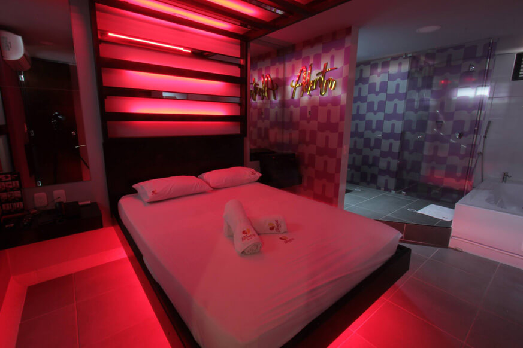

<!--
  Generated template for the MotelPage page.

  See http://ionicframework.com/docs/components/#navigation for more info on
  Ionic pages and navigation.
-->
<ion-header>
    <ion-navbar color="primary">
      <button ion-button menuToggle>
        <ion-icon name="menu"></ion-icon>
      </button>
      <ion-title>
        <strong>Ionic 3</strong> Start Theme
      </ion-title>
      <ion-buttons end>
        <button ion-button tappable (click)="presentNotifications($event)">
          <ion-icon name="notifications"></ion-icon>
        </button>
        <button ion-button tappable (click)="goToAccount()">
          <ion-icon name="cog"></ion-icon>
        </button>
      </ion-buttons>
    </ion-navbar>
  </ion-header>


<ion-content>

    <ion-searchbar (ionInput)="getItems($event)"></ion-searchbar>
    <ion-list>
      <ion-item *ngFor="let item of items">
        {{ item }}
      </ion-item>
    </ion-list>
  
  <ion-list>
      <ion-item>
        <ion-thumbnail item-start>
          
        </ion-thumbnail>
        <h2>My Neighbor Totoro</h2>
        <p>Hayao Miyazaki • 1988</p>
        <button ion-button clear item-end>Ver</button>
      </ion-item>

      <ion-item>
          <ion-thumbnail item-start>
            
          </ion-thumbnail>
          <h2>My Neighbor Totoro</h2>
          <p>Hayao Miyazaki • 1988</p>
          <button ion-button clear item-end>Ver</button>
        </ion-item>
    </ion-list>
      

</ion-content>
